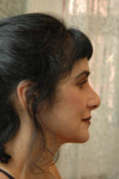

Kathryn I. Kailian, Master Esthetician, AEA, LE, NCEA Certified
 - Former member Board of Barber & Cosmetology, District of Columbia, Dept. of Consumer & Regulatory Affairs. Developed rules and regulations for licensing in electrolysis, esthetics, and other subspecialties of cosmetology, and barbering.
- Current member of the National Coalition of Estheticians, Manufacturers/Distributors & Associations (NCEA) and represented the DC Board of Barber & Cosmetology in setting national standards for industry licensing.
- First National Coalition of Estheticians, Manufacturers/Distributors & Associations (NCEA) Certified Professional in DC. NCEA Certified is the professional status awarded to a skin care professional that has met the competency standards as set forth by NCEA's 1200 Hour Esthetician Job Task Analysis. It represents the highest skin care credential available in the United States and adherence to the code of ethics of the profession.
- Current member of the American Electrology Association (AEA)
- Licensed in master esthetics and electrolysis in the District of Columbia. First licensed electrologist and first licensed master esthetician in the District of Columbia.
- Practicing electrolysis since 1976 and esthetics since 1982.
- Paramedical Esthetician/Electrologist for Dr. Charles E. Pappas, MD., F.A.C.S., Ft. Washington, PA from 1978-1994.
- BFA School of Fine Arts, Boston University. M.Ed Fine Arts, Tyler School of Art, Temple University.
- Skin Inc. article